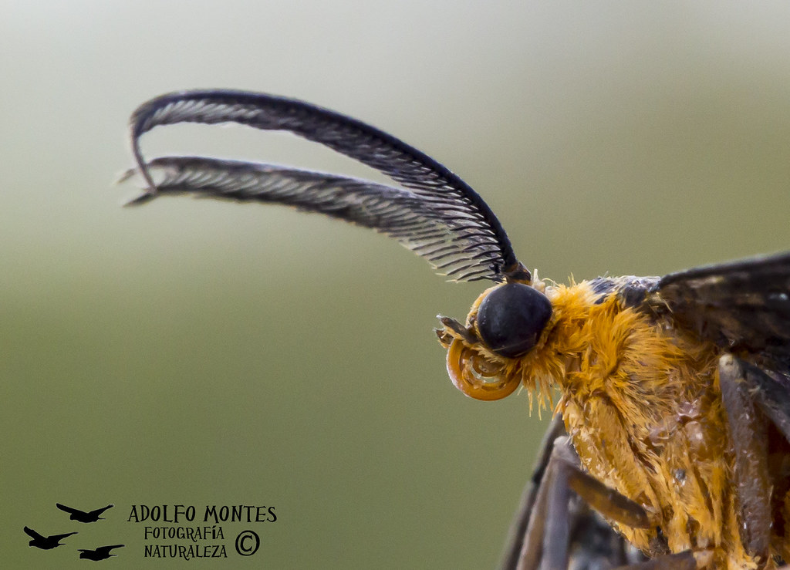

Las antenas de las mariposas son órganos sensoriales muy importantes que les ayudan a percibir el mundo que les rodea. Cumplen funciones como detectar olores, sabores, vibraciones, cambios de temperatura, humedad y posiblemente sonidos. También son cruciales para la orientación, ayudando a las mariposas a encontrar alimento, parejas y a navegar durante la migración.
- Olfato y gusto: Detectan olores de flores para encontrar néctar y feromonas de otras mariposas para el apareamiento.
- Tacto y equilibrio: Actúan como sensores táctiles que ayudan a mantener el equilibrio durante el vuelo.
- Orientación y navegación: Ayudan a percibir la luz solar y orientarse en migraciones largas.
- Detección de vibraciones: Podrían captar vibraciones en el aire para detectar peligros u otras mariposas.
- Comunicación: Se usan para emitir y recibir señales químicas entre individuos.
- Detección de plantas hospederas: Algunas especies detectan compuestos de plantas para poner sus huevos en el lugar adecuado.
En resumen, las antenas de las mariposas son órganos sensoriales versátiles que desempeñan un papel fundamental en su supervivencia y comportamiento.